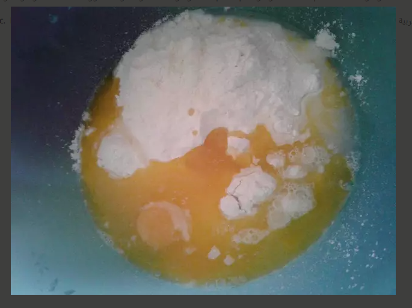
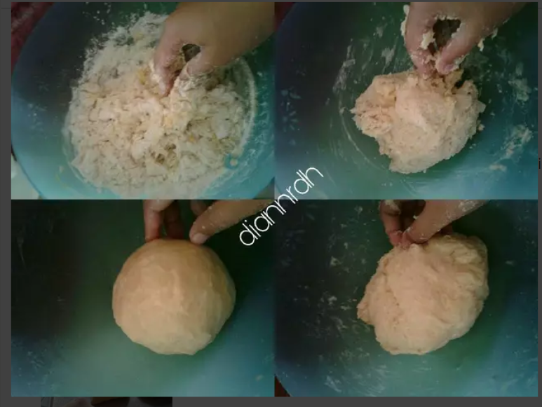

RESEP ROTI MARYAM

Bahan-bahan
- 250 gr tepung terigu
- 1 butir telur
- 3 sdm margarin, lelehkan
- 100 ml air hangat
- 2 sdm susu bubuk (optional)
- 1/2 sdt garam
- margarin leleh untuk olesan
- minyak untuk merendam
Langkah-langkah
1. Campur semua bahan roti jadi satu

2. Uleni sampai kalis (aku pake tangan) jangan takut jika adonan lengket ya,
lumuri tangan sesekali dg tepung (tapi jangan menambahkan tepung) uleni
terus sampai adonan kalis.

3. Kalisnya adonan canai tidak sekalis adonan roti ya, kira2 seperti ini sudah cukup.

4. Bagi adonan menjadi 12 bagian. Kalau mau lebih besar bagi jadi 10 bagian.

5. Lumuri/rendam adonan dengan minyak goreng (supaya adonan tidak kering)
diamkan 1-3 jam (boleh semalaman asal ditutup serbet)

6. Setelah di rendam minyak, adonan akan lebih lentur dan kalis daripada sebelumnya,
mirip adonan kulit martabak yaa

7. Ambil 1 adonan. Pipihkan melebar setipis mungkin. Olesi dengan margarin cair.
Gulung memanjang. Linting berlawanan arah spt konde. Tumpuk kedua bagian, terakhir pipihkan lagi.
8. Panaskan teflon dengan api kecil aja. Panggang adonan dengan sekali balik,
tekan-tekan supaya matangnya rata. Kalau mau dikasih butter akan lebih gurih canainya